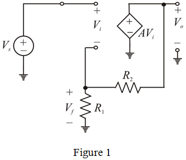
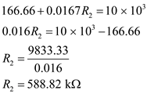

(a)
Define feedback factor  .
.
Apply voltage division rule to find the voltage  .
.
Therefore feedback factor  is .
is .
Refer to the circuit diagram in Figure P10.2 in the textbook.
Draw the equivalent circuit for the figure by replacing op-amp with its equivalent circuit.

(a)
Define feedback factor .
Apply voltage division rule to find the voltage .
Therefore feedback factor is .
(b)
(i)
Obtain  for .
for .
The closed loop gain  is,
is,

Substitute and  in the equation
in the equation
Evaluating 
Substitute
Therefore
(ii)
Obtain  for .
for .
The closed loop gain  is,
is,

Substituting  and
and  values in the equation
values in the equation


Therefore for
(iii)
Obtaining  for
for 
Substituting  and
and  values in equation (3) is
values in equation (3) is
Evaluating 

Therefore for
(c)
(i)
Find the percentage change in if  is reduced by 20 %.
is reduced by 20 %.
Given
Reduced to new gain will be
Calculating 
Now find the percentage change in 
Therefore the percentage change in  is
is
(ii)
For 
Reduced to  new gain will be
new gain will be
 .
.
Now find the percentage change in  .
.
Thus, percentage change in  is .
is .
(iii)
For
Reduced to new gain will be
Calculate 
Now find the percentage change in  .
.
Therefore the percentage change in  is .
is .